特徵生成與降維動機（Feature Generation）
▼一句話：把高維原始測量值壓縮成少數「資訊密度高」的特徵，是模式辨識、資料視覺化、資訊檢索的共同前置工程。
為何需要：像素、相機感測值、聲音樣本這些原始測量彼此高度相關（一張照片裡相鄰像素差不多紅、語音在毫秒尺度上相關），直接餵給分類器會浪費計算並容易過擬合。我們想把「相關冗餘」壓掉，留下「能把不同類別分開」的本質變數。
三條主線：
- 線性變換族：固定基底（DFT/DCT/Hadamard/Haar/Wavelet）— 計算快，但基底不為資料量身打造。
- 資料自適應族：KLT（PCA）/SVD/ICA/NMF — 基底從資料學出來，壓縮效果最好但計算貴。
- 非線性流形族：Kernel PCA、Laplacian Eigenmap、LLE、ISOMAP — 處理彎曲流形（如瑞士捲、臉部姿態空間）。
怎麼用：先看資料是否大致線性（PCA/KLT 即可）；若像螺旋、捲曲則改用流形方法；若要稀疏且非負（如影像像素、機率），NMF 是首選；若要訊號/影像壓縮，DCT 與 Wavelet 是業界標準。
特徵生成的主要目的為何？
基底向量與基底影像（Basis Vectors & Images）
▼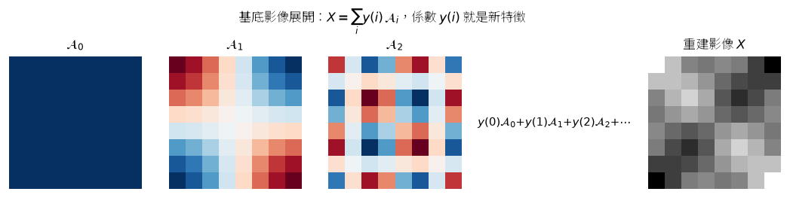
🤖 AI 生圖可用：重繪此示意圖的提示詞（結構化）
WHAT: Five panels left to right: three small colored grid patterns labeled basis image 0/1/2, an equation "target = y0*A0 + y1*A1 + y2*A2 + ...", and a grayscale reconstructed image on the right. WHY: The reader must see that ANY image can be written as a weighted sum of a small set of fixed basis patterns, and the weights y(i) ARE the new features -- this is the shared idea behind every transform in the chapter (KLT/DFT/DCT/...). MUST show: (1) at least 3 visually distinct basis patterns (not identical blobs), (2) an explicit weighted-sum equation connecting them to the output, (3) a plausible reconstructed image on the right that looks like a combination, not a random image. AVOID: drawing basis patterns as plain solid-color squares with text labels; showing the reconstruction as unrelated to the basis patterns. STYLE: flat scientific plot, small grid heatmaps, white background, red-blue diverging colormap for basis patterns.
一句話：線性變換把訊號寫成「一組基底向量的加權和」，權重就是新特徵。
向量版：給定 $N\times N$ 么正矩陣 $A$（其行 $\boldsymbol{a}_i$ 是正交基底向量），變換 $\boldsymbol{y}=A^H\boldsymbol{x}$ 的每個分量 $y(i)=\boldsymbol{a}_i^H\boldsymbol{x}$ 就是 $\boldsymbol{x}$ 在第 $i$ 個基底上的投影。逆變換 $\boldsymbol{x}=\sum_i y(i)\boldsymbol{a}_i$ 重建原向量。
影像（矩陣）版：把 $N\times N$ 影像 $X$ 用兩個么正矩陣變換 $Y=U^H X V$，basis images $\mathcal{A}_{ij}=\boldsymbol{u}_i\boldsymbol{v}_j^H$ 是外積矩陣。當 $Y$ 對角時只剩 $N$ 個非零 basis images，$X=\sum_i Y(i,i)\boldsymbol{u}_i\boldsymbol{v}_i^H$，這就是 SVD 的雛形。
為何重要：所有本章線性變換（KLT/SVD/DFT/DCT/Hadamard/Haar/Wavelet）都是選不同的 $A$、$U$、$V$，差別只在基底怎麼選：KLT/SVD 的基底從資料學，其他則是固定公式。
「basis image」是什麼？
Karhunen-Loève 變換（KLT／PCA）
▼怎麼操作：拖動三條滑桿；資料分布會即時更新，主軸方向也跟著旋轉。
觀察什麼：當 $\rho$ 變小，主軸會越接近水平；當 $\sigma_1^2/\sigma_2^2$ 比值變大，主軸越「分明」。
正確基準：主軸必指向變異數最大方向；主軸方向即為協方差矩陣最大特徵值對應的特徵向量。
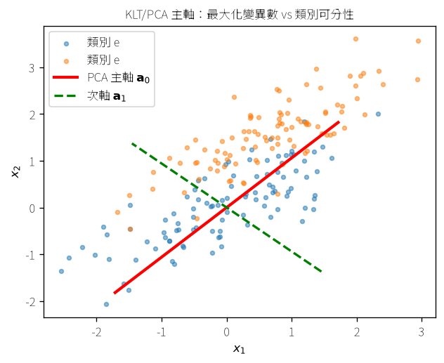
🤖 AI 生圖可用：重繪此示意圖的提示詞（結構化）
WHAT: A 2D scatter of two overlapping Gaussian-ish point clouds (two classes), with two lines overlaid: a solid long PCA principal axis and a dashed shorter secondary axis. WHY: The reader must see the counterintuitive point -- the PCA principal axis (direction of max variance) is NOT necessarily the direction that best separates the two classes; the secondary axis might separate them better. MUST show: (1) two visually distinguishable point clouds, (2) the principal axis clearly aligned with the combined spread direction, (3) a visual sense that class separation is better along a DIFFERENT direction than the principal axis. AVOID: drawing the principal axis as trivially aligned with class separation (that would hide the counterintuitive point); abstract arrows with no real scatter data. STYLE: clean scientific scatter plot, white background, blue/orange classes, red solid axis, green dashed axis.
一句話：把相關的原始座標轉成互不相關的新座標，並讓前 $m$ 個新座標的變異數（資訊量）最大。
數學核心：取資料的相關矩陣 $R_x=\frac{1}{n}\sum_k \boldsymbol{x}_k\boldsymbol{x}_k^T$，做特徵分解 $R_x\boldsymbol{a}_i=\lambda_i\boldsymbol{a}_i$；以 $\boldsymbol{a}_i$ 為行組成的 $A$ 就是 KLT 矩陣，$R_y=A^T R_x A=\Lambda$ 對角化，$y(i)$ 互不相關且 $\mathrm{Var}[y(i)]=\lambda_i$。
MSE 最佳性：只保留前 $m$ 個最大特徵值對應的基底時，近似誤差 $E\|\boldsymbol{x}-\hat{\boldsymbol{x}}\|^2=\sum_{i=m}^{N-1}\lambda_i$ 對所有正交投影最小——這就是為什麼 KLT 又稱 PCA（Principal Component Analysis）。
三個性質的等價：互不相關 ↔ 變異數最大 ↔ 熵最大（高斯假設下）↔ MSE 最小——四個觀點同一件事。
反直覺：PCA 不一定給出最佳分類方向。Figure 6.1 顯示：PCA 的第一主軸可能把兩類疊在一起，反而第二主軸才分得開。這是 PCA 的無監督特性決定的——它只在乎變異數，不在乎類別。
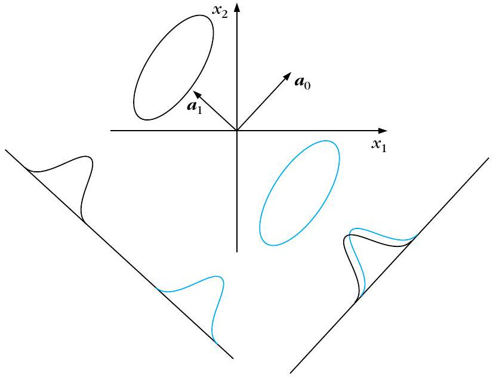
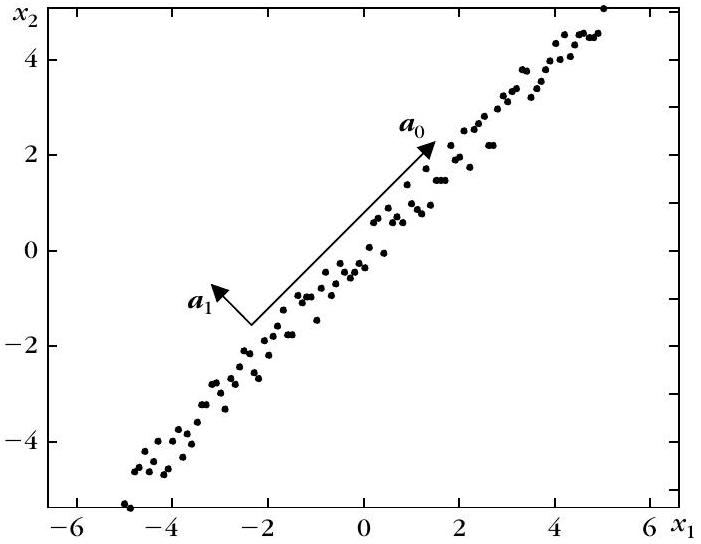
KLT 與 PCA 的關係？
奇異值分解（SVD）
▼怎麼操作：拖動 $k$ 條滑桿（保留奇異值數）與 $N$ 條滑桿（矩陣大小）。
觀察什麼：$k$ 越小，影像越模糊；Frobenius 誤差（右下 readout）等於丟棄奇異值平方和 $\sum_{i=k}^{r-1}\lambda_i$。
正確基準：rank-$k$ 矩陣中 SVD 近似 $\hat{X}=\sum_{i=0}^{k-1}\sqrt{\lambda_i}\mathbf{u}_i\mathbf{v}_i^H$ 對原矩陣 Frobenius 範數誤差**最小**。
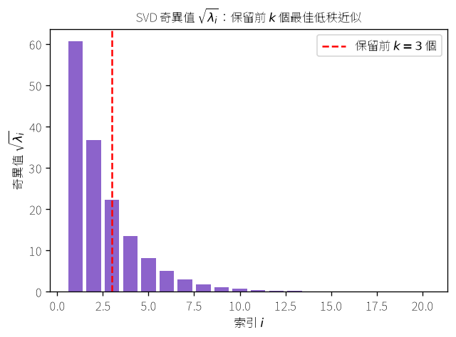
🤖 AI 生圖可用：重繪此示意圖的提示詞（結構化）
WHAT: A bar chart of singular values (or their square roots) sorted in decreasing order, rapidly decaying, with a vertical dashed cutoff line marking "keep top k=3". WHY: The reader must see WHY low-rank approximation works -- most of the "energy" is concentrated in the first few singular values, so truncating after a small k loses little information. MUST show: (1) a clearly decaying bar sequence (not flat/uniform), (2) an explicit cutoff marker at a small k, (3) axis labels naming singular value index and magnitude. AVOID: a flat or randomly-ordered bar chart that doesn't visually justify truncation. STYLE: clean scientific bar chart, white background, purple bars, red dashed cutoff line.
一句話：把任意 $l\times n$ 矩陣 $X$ 寫成 $X=U\Sigma V^H$，$\Sigma$ 對角線上的奇異值 $\sqrt{\lambda_i}$ 給出單一矩陣的最佳低秩近似。
數學：$X^HX$ 與 $XX^H$ 共享非零特徵值 $\lambda_i$，$U$ 與 $V$ 分別是其對應的么正特徵向量矩陣。展開式 $X=\sum_{i=0}^{r-1}\sqrt{\lambda_i}\boldsymbol{u}_i\boldsymbol{v}_i^H$ 是精確表示。
低秩近似（最佳）：保留前 $k$ 個奇異值得到 $\hat{X}=\sum_{i=0}^{k-1}\sqrt{\lambda_i}\boldsymbol{u}_i\boldsymbol{v}_i^H$，Frobenius 範數誤差 $\epsilon^2=\sum_{i=k}^{r-1}\lambda_i$ 對所有 rank-$k$ 矩陣最小。這是 SVD 在影像壓縮、資訊檢索（潛在語意索引 LSI）、推薦系統的理論基礎。
與 KLT 的差異：KLT 處理一組樣本（共變異數矩陣），SVD 處理單一矩陣（無需統計平均）。SVD 的「資訊打包」能力與 KLT 類似，但 SVD 適合資料矩陣（樣本為行/列），KLT 適合特徵向量為行的場景。
幾何意涵：$\boldsymbol{x}_i\approx U_k\boldsymbol{a}_i$ 把每個 $\boldsymbol{x}_i$ 投影到主子空間 $\mathrm{span}(\boldsymbol{u}_0,...,\boldsymbol{u}_{k-1})$，且歐氏距離近似保留——這是資訊檢索能用低維空間搜尋的關鍵。
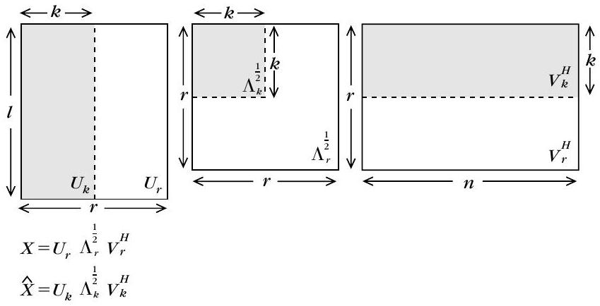
SVD 對單一矩陣 $X$ 給出的最佳 rank-$k$ 近似的 Frobenius 誤差是？
獨立成分分析（ICA）
▼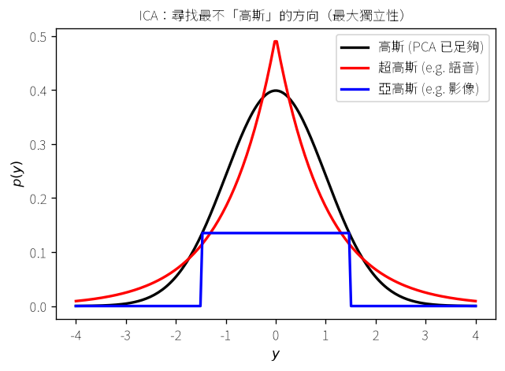
🤖 AI 生圖可用：重繪此示意圖的提示詞（結構化）
WHAT: Three overlaid probability density curves on one plot: a Gaussian (bell curve), a sharply-peaked heavy-tailed super-Gaussian (e.g. Laplacian), and a flat-topped sub-Gaussian (e.g. uniform-like), each labeled with an example domain (speech / image). WHY: The reader must see that ICA's search criterion is "how far from Gaussian", and that real-world independent sources (speech, natural images) are almost never Gaussian-shaped -- that's exactly what ICA exploits, while PCA cannot use this cue at all. MUST show: (1) three visibly different curve shapes on the same axes, (2) the Gaussian clearly in the middle as the "boring, PCA-sufficient" case, (3) labels naming which shape corresponds to which real signal type. AVOID: three curves that look almost identical; no labeling of which shape is "more/less Gaussian". STYLE: clean scientific line plot, white background, black/red/blue curves, legend.
一句話：比 PCA 更進一步——尋找統計獨立（不只是不相關）的新座標，揭露高階結構。
問題設定：觀察 $\boldsymbol{x}=\mathcal{A}\boldsymbol{y}$（$\mathcal{A}$ 未知混合矩陣，$\boldsymbol{y}$ 的各分量統計獨立）。求反矩陣 $W$ 使 $\boldsymbol{y}=W\boldsymbol{x}$ 恢復獨立源。
識別條件：除一個以外，各獨立成分必須是非高斯。高斯時獨立=不相關，PCA 已足夠；非高斯才有資訊可挖。
兩個實作法：
- 二階+四階累計量（Como 94）：先做 PCA 讓資料不相關，再做一個么正變換 $\hat{A}$ 讓四階 cross-cumulants 歸零，等同最大化 $\sum_i \kappa_4(y(i))^2$。
- 互資訊最小化：$I(\boldsymbol{y})=-H(\boldsymbol{y})+\sum_i H(y(i))$，獨立時為零。用 Edgeworth 展開後近似為 $I\approx C-\sum_i[\frac{1}{12}\kappa_3^2+\frac{1}{48}\kappa_4^2+...]$，可用梯度下降解（自然梯度改善收斂）。
反直覺：PCA 的「第一主軸」不一定是「最有趣的方向」。圖 6.1 顯示：在雙類別、相同共變異數的高斯資料下，PCA 的 $\boldsymbol{a}_0$（高變異方向）會讓兩類幾乎重合；ICA 用四階累計量找出 $\boldsymbol{a}_1$——高斯性最低的方向——反而更能把兩類分開。
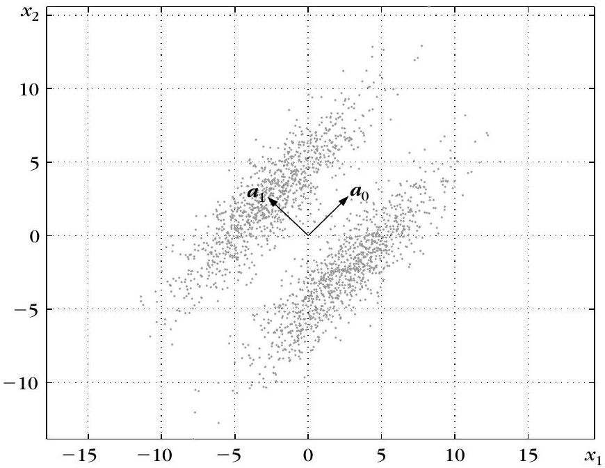
ICA 比 PCA 多利用了哪階統計量？
非負矩陣分解（NMF）
▼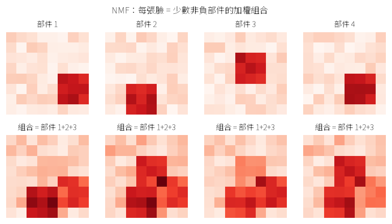
🤖 AI 生圖可用：重繪此示意圖的提示詞（結構化）
WHAT: Two rows of small grayscale image patches: top row shows several sparse localized "part" patterns (like isolated bright blobs), bottom row shows a few "combined" images built by adding 2-3 of those parts together with different weights. WHY: The reader must see NMF's defining trait -- because weights are constrained non-negative, images decompose into a small number of LOCALIZED, ADDITIVE parts (e.g. nose, eyes) rather than the whole-face, signed eigenfaces PCA would produce. MUST show: (1) each "part" patch visibly sparse/localized (not filling the whole tile), (2) at least one "combined" image that visibly looks like a sum of 2+ parts, (3) a title or caption stating "non-negative additive parts". AVOID: parts that look like random noise with no localized structure; combined images identical to a single part (no visible combination). STYLE: flat scientific image-grid plot, white background, red/warm colormap for intensity.
一句話：在「所有元素 $\geq 0$」的限制下，把 $X\approx WH$，分解成兩個低秩非負矩陣。
問題設定：$X\approx WH$，$W$ 是 $l\times r$，$H$ 是 $r\times n$，$r\lt \min(l,n)$，所有元素 $\geq 0$。
為何需要非負：物理量（像素強度、機率、頻譜強度、化學濃度）本質非負。PCA/SVD 的基底向量含正負號，物理上難解釋。NMF 的「部件組合」是加法、可加性，符合「整體是部分的和」直覺——這是 NMF 在人臉部件、主題模型、紋理字典成功的關鍵。
兩種損失：
- Frobenius 範數：$\min\|X-WH\|_F^2$ subject to $W,H\geq 0$。
- KL 散度版：$\min \sum_{ij}[X_{ij}\ln\frac{X_{ij}}{(WH)_{ij}}-X_{ij}+(WH)_{ij}]$，當列和為 1 時等同 KL 距離。
算法：常用 Lee/Seung 的乘法更新規則，保證非負、收斂。Newton 法、梯度下降法、投影梯度法等也可用。NMF 無閉式解，需迭代。
與 KLT/SVD 的哲學差異：後兩者用正交性約束基底，NMF 用非負性約束基底——後者在影像處理、生醫訊號、主題模型常更直覺。
NMF 的核心約束是？
非線性降維概述與流形假設
▼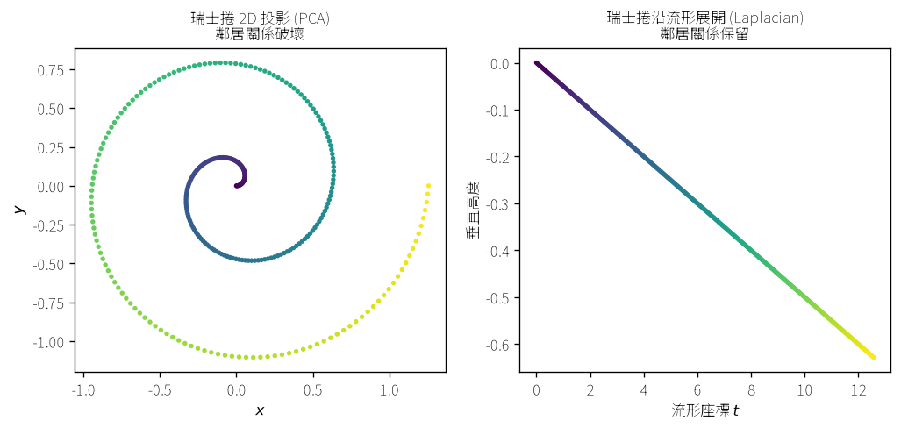
🤖 AI 生圖可用：重繪此示意圖的提示詞（結構化）
WHAT: Two side-by-side scatter panels: LEFT shows a 3D "Swiss roll" curved manifold flattened by straight-line (PCA-style) 2D projection with points from different roll layers landing on top of each other (colored by their true position along the roll to reveal the mixing); RIGHT shows the same points "unrolled" along the manifold coordinate, preserving the color gradient smoothly. WHY: The reader must see WHY linear projection breaks on curved data -- neighboring points along the roll's spiral can end up far apart, or distant points can end up overlapping, after a naive linear projection; unrolling along the manifold preserves true neighbor relationships. MUST show: (1) a color gradient along the manifold's intrinsic coordinate so "mixing vs preservation" is visible, (2) the LEFT panel visibly showing color bands overlapping/crossing (evidence of broken neighbor structure), (3) the RIGHT panel showing a smooth unbroken color gradient. AVOID: two panels that look equally "clean" (that would hide the whole point of needing nonlinear methods); using different point sets in each panel. STYLE: clean scientific scatter plot, white background, viridis colormap.
一句話：當資料分布是彎曲的低維流形（如瑞士捲、臉部姿態空間），線性方法（如 PCA）會高估內在維度，必須用非線性方法「展開」流形。
動機：很多高維資料其實是少數自由參數的非線性函數。例如手寫數字「0」在不同書寫者下可能有上千維像素差異，但實際只有「傾斜、寬度、圓度」幾個本質參數。我們要找出這個內在維度（intrinsic dimensionality）。
兩大流派：
- 核方法：把資料映射到高維（甚至無限維）Hilbert 空間 $H$，在 $H$ 做線性 PCA。代表：Kernel PCA（以 Gram 矩陣 $\mathcal{K}(i,j)=K(\boldsymbol{x}_i,\boldsymbol{x}_j)$ 的特徵分解代替協方差矩陣）。
- 圖論方法：建鄰接圖（用 $\epsilon$-鄰域或 $k$-近鄰），權重用熱核 $W(i,j)=\exp(-\|\boldsymbol{x}_i-\boldsymbol{x}_j\|^2/\sigma^2)$。在圖上定義「保持局部鄰居關係」的目標，求特徵向量得低維座標。代表：Laplacian Eigenmaps、LLE、ISOMAP。
重要概念：
- 局部歐氏距離 ≈ 流形測地距離（微分幾何結果）。
- 局部線性 → 全域非線性（流形可被局部線性面塊近似）。
與線性方法的關係：核 PCA 是 MDS 的核化版；圖論方法可用「資料相依核」改寫成 Kernel PCA 的一例 [Ham 04]——殊途同歸。
線性 PCA 在瑞士捲資料上的主要問題？
Kernel PCA
▼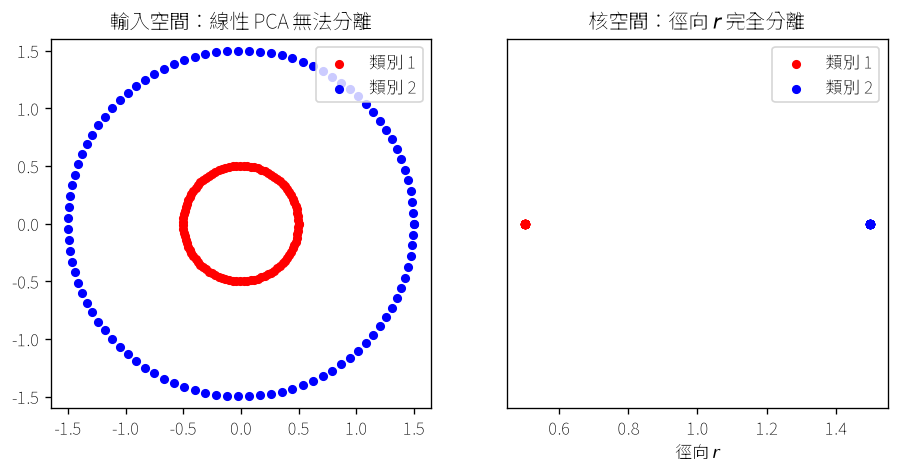
🤖 AI 生圖可用：重繪此示意圖的提示詞（結構化）
WHAT: Two side-by-side panels: LEFT shows two concentric-ring point classes (inner ring = class 1, outer ring = class 2) in raw 2D input space with no line able to separate them; RIGHT shows the SAME points remapped by radius r (or an equivalent single feature) onto a 1D line where the two classes are now cleanly separated into two distinct clusters. WHY: The reader must see the causal mechanism of the kernel trick -- data that is linearly inseparable in the original space can become trivially (linearly) separable after a nonlinear feature map, without ever explicitly constructing the high-dimensional space. MUST show: (1) genuinely interleaved/concentric classes in the input panel (not already separable by a line), (2) a completely clean gap between classes in the output panel, (3) same color coding for classes in both panels so the reader can track correspondence. AVOID: showing classes that were already linearly separable in the left panel (that defeats the purpose); showing the right panel as still 2D with no explanation of what the new axis represents. STYLE: clean scientific scatter plot, white background, red/blue classes.
一句話：把 PCA 提升到非線性版本——隱含映射 $\boldsymbol{\phi}:\mathbb{R}^N\to H$ 到高維 Hilbert 空間，在 $H$ 做線性 PCA。
做法：直接算 $n\times n$ Gram 矩陣 $\mathcal{K}(i,j)=K(\boldsymbol{x}_i,\boldsymbol{x}_j)$（$K$ 是核函數，如 RBF、多項式），求 $\mathcal{K}\boldsymbol{a}=\lambda n\boldsymbol{a}$ 的特徵向量 $\boldsymbol{a}$。第 $k$ 個主成分的投影為 $y(k)=\sum_i a_k(i)K(\boldsymbol{x}_i,\boldsymbol{x})$——完全不需要顯式計算 $\boldsymbol{\phi}(\boldsymbol{x})$（這就是「核技巧」）。
與線性 PCA 的對應： | | 線性 PCA | Kernel PCA | |--|--|--| | 對象 | $N\times N$ 協方差 $R$ | $n\times n$ Gram $\mathcal{K}$ | | 特徵分解 | $R\boldsymbol{v}=\lambda\boldsymbol{v}$ | $\mathcal{K}\boldsymbol{a}=n\lambda\boldsymbol{a}$ | | 投影 | $\boldsymbol{v}^T\boldsymbol{x}$ | $\sum_i a(i)K(\boldsymbol{x}_i,\boldsymbol{x})$ |
特性：保留線性 PCA 的所有性質（最大變異數、最小 MSE、不相關、最大化熵）。當核是線性時退化為線性 PCA。
侷限：不考慮底層流形的幾何結構，僅做非線性映射；樣本量大時 $n\times n$ 特徵分解昂貴。
Kernel PCA 用哪個矩陣做特徵分解？
Laplacian Eigenmaps（圖論降維）
▼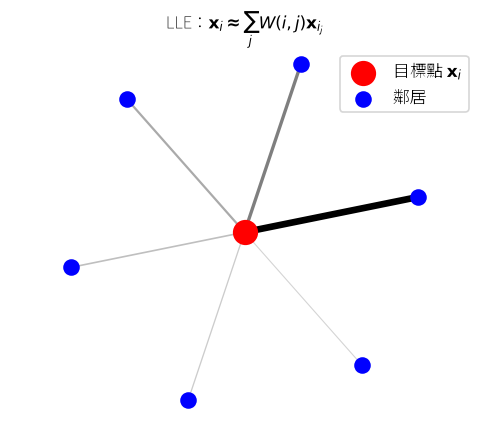
🤖 AI 生圖可用：重繪此示意圖的提示詞（結構化）
WHAT: A scatter of points in 2D forming a rough manifold shape, with ONE point highlighted (e.g. red star) and lines connecting it to its k nearest graph-neighbors, line thickness or opacity encoding an edge weight. WHY: The reader must see that graph-based methods (Laplacian Eigenmaps) build a local neighborhood graph FIRST and only trust distances along that graph, not raw Euclidean distance across the whole space -- this is what lets them respect a curved manifold's true geometry. MUST show: (1) a clearly highlighted center point, (2) multiple neighbor connections with VISIBLY different line weights/thicknesses (not all identical), (3) a caption or label naming this a "local neighborhood graph". AVOID: uniform unweighted lines that look like a generic network diagram with no notion of "local" vs "global"; showing all points connected to all others. STYLE: clean scientific scatter+graph plot, white background, red highlighted point, blue neighbors, black connecting lines with varying opacity.
一句話：建鄰接圖，目標是「鄰居在低維空間仍相鄰」，用圖 Laplacian 的特徵向量當低維座標。
三步驟：
- 建圖：$v_i$ 對應 $\boldsymbol{x}_i$。邊準則：$\|\boldsymbol{x}_i-\boldsymbol{x}_j\|^2\lt \epsilon$ 或 $k$-近鄰。
- 加權：熱核 $W(i,j)=\exp(-\|\boldsymbol{x}_i-\boldsymbol{x}_j\|^2/\sigma^2)$，否則為 0。稀疏矩陣。
- 求特徵向量：圖 Laplacian $L=D-W$（$D$ 為度數矩陣對角），解廣義特徵問題 $L\boldsymbol{v}=\lambda D\boldsymbol{v}$。忽略 $\lambda_0=0$ 對應的全 1 向量，取後續 $m$ 個特徵向量，第 $i$ 個樣本的低維座標 $\boldsymbol{y}_i^T=[v_1(i),v_2(i),...,v_m(i)]$。
目標函數直觀：最小化 $E_L=\sum_{ij}(y_i-y_j)^2 W(i,j)$ —— 強迫高權重（鄰居）在低維保持接近。
反直覺效果：圖 6.6 顯示，PCA 對 Archimedes 螺旋給出兩個相近特徵值（誤判為 2D），而 Laplacian Eigenmaps 漂亮地「展開」螺旋為一維直線，並保留鄰居順序——這正是流形降維想要的。
計算：稀疏矩陣 + Lanczos 演算法可降到亞二次方。
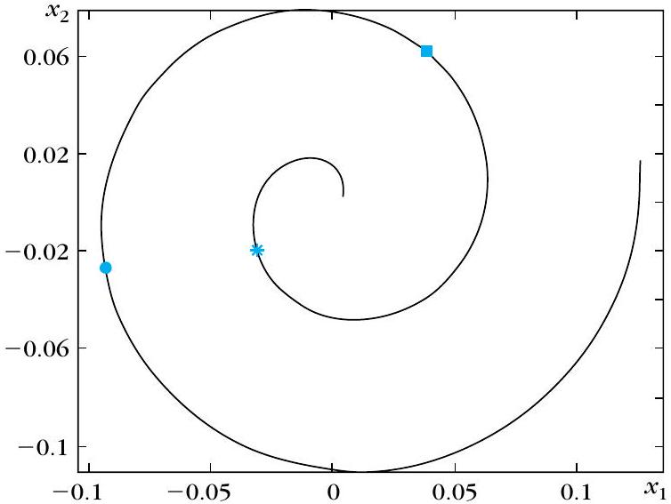
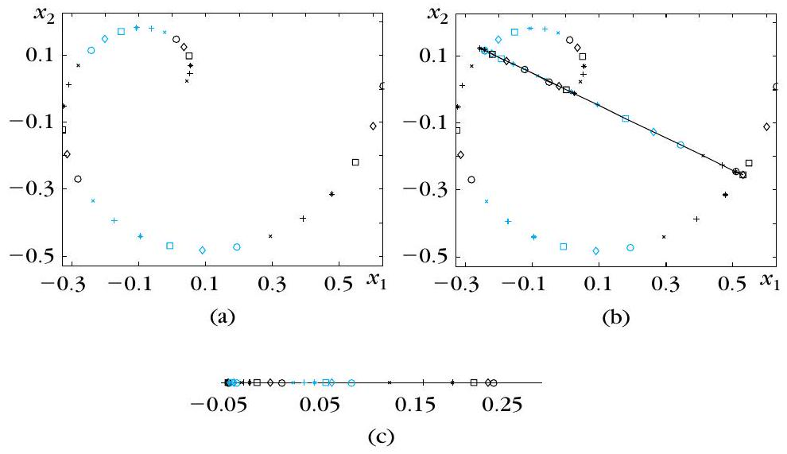
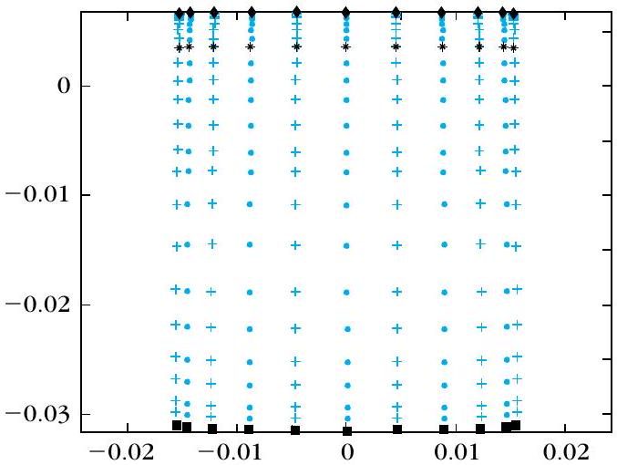
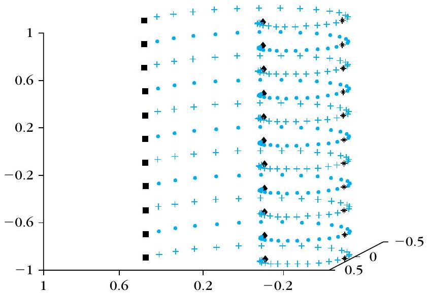
Laplacian Eigenmaps 為什麼保留鄰居關係？
LLE 與 ISOMAP
▼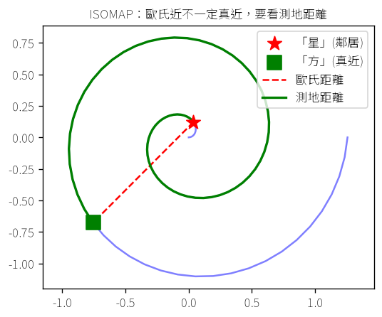
🤖 AI 生圖可用：重繪此示意圖的提示詞（結構化）
WHAT: A scatter plot of one target point (e.g. red star) surrounded by several neighbor points (blue dots), connected by lines whose thickness encodes a reconstruction weight W(i,j), with a caption showing the reconstruction equation. WHY: The reader must see LLE's specific mechanism -- each point is reconstructed as a WEIGHTED linear combination of just its local neighbors (not all points, not equal weights), and those same local weights are preserved when embedding into a lower dimension. MUST show: (1) visibly different line thicknesses for different neighbors (unequal weights), (2) the explicit reconstruction formula x_i ~ sum_j W(i,j) x_j near the figure, (3) a clear visual distinction between the "target point" and "neighbor points". AVOID: all connection lines drawn with identical weight/thickness (that hides the whole point of "weighted" reconstruction). STYLE: clean scientific scatter plot, white background, red target point, blue neighbor points, black lines with variable opacity/width.
LLE（Locally Linear Embedding）：假設流形局部是線性的，所以每個點可由鄰居線性組合重建。
- 步驟 1：找 $k$-近鄰。
- 步驟 2：求權重矩陣 $W$，讓每個 $\boldsymbol{x}_i$ 從其鄰居線性重建，$\arg\min_W \sum_i\|\boldsymbol{x}_i-\sum_j W(i,j)\boldsymbol{x}_{i_j}\|^2$，約束 $\sum_j W(i,j)=1$（行列平移不變）、非鄰居 $W=0$。
- 步驟 3：在低維空間保持同樣權重，$\arg\min_Y \sum_i\|\boldsymbol{y}_i-\sum_j W(i,j)\boldsymbol{y}_j\|^2$，受 $\sum \boldsymbol{y}_i=0$、單位協方差約束。等價於 $(I-W)^T(I-W)$ 的特徵分解（丟最小特徵值那個）。
特性：對旋轉、平移、縮放不變（局部線性重建特性）。
ISOMAP：用測地距離代替歐氏距離的 MDS。
- 步驟 1：建 $k$-近鄰圖。
- 步驟 2：用 Dijkstra 沿圖計算所有點對的測地距離（最短路徑）。
- 步驟 3：用 MDS 對測地距離矩陣做降維。
差異：LLE 與 Laplacian Eigenmap 用稀疏矩陣特徵分解（計算快），ISOMAP 用稠密 Gram 矩陣 + 最短路徑（計算貴）。三者皆試圖保留流形幾何，但 LLE 強調局部重建、ISOMAP 強調全域測地距離、Laplacian 強調鄰居接近。
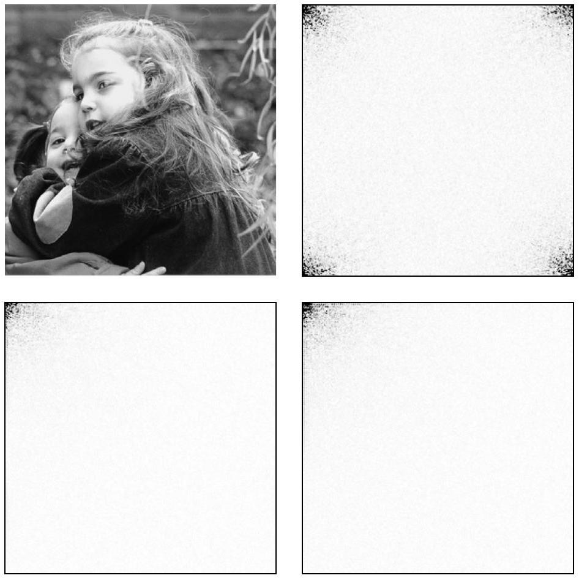
LLE 在低維空間仍用相同的權重嗎？
離散傅立葉變換（1D DFT）
▼怎麼操作：拖動 $f_1$、$f_2$、雜訊強度滑桿；時域波形（上）與 DFT 頻譜（下）即時更新。
觀察什麼：頻譜在 $f_1$ 與 $f_2$ 處有尖峰；雜訊把尖峰模糊化；尖峰位置在 N=64 採樣下為 $k=f\cdot N/f_s$（這裡 $f_s=N$）。
正確基準：$\text{DFT: } y(k)=\sum_n x(n) e^{-j2\pi kn/N}$。FFT 計算複雜度 $O(N\log_2 N)$。
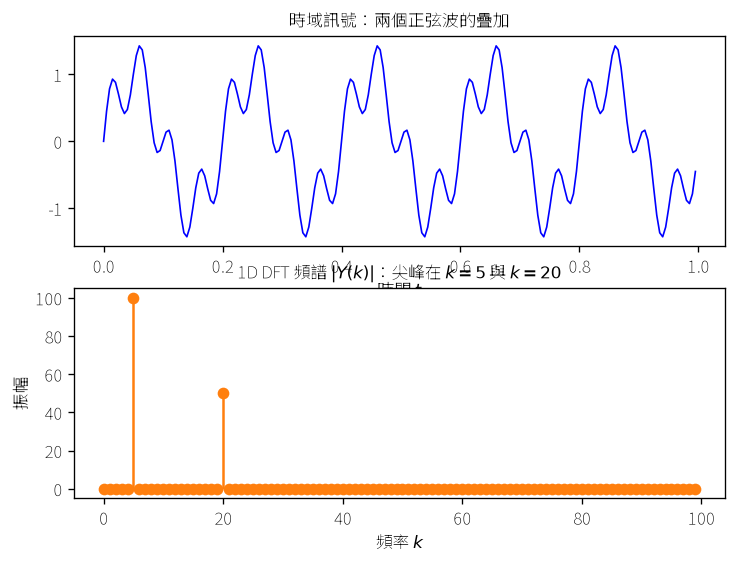
🤖 AI 生圖可用：重繪此示意圖的提示詞（結構化）
WHAT: Two stacked panels: TOP shows a 1D time-domain signal that is visibly the sum of a low-frequency and a higher-frequency sine wave; BOTTOM shows its DFT magnitude spectrum as a stem plot with exactly two sharp peaks at the two frequencies present in the top signal. WHY: The reader must see the causal link between time domain and frequency domain -- a signal made of two sinusoids produces EXACTLY two spikes in its spectrum, at exactly those two frequencies, nothing else. MUST show: (1) a visibly non-trivial (multi-frequency) waveform on top, not a single clean sine wave, (2) exactly two sharp, isolated peaks in the bottom spectrum aligned with the two frequencies used on top, (3) axis labels for time and frequency index. AVOID: a spectrum that is smeared/noisy across many bins with no clear peaks; showing only one frequency component (too trivial to demonstrate the transform). STYLE: clean scientific two-panel plot, white background, blue time-domain line, orange stem spectrum.
一句話：用一組複數指數基底把時域序列變到頻域。
定義：$y(k)=\frac{1}{\sqrt{N}}\sum_{n=0}^{N-1} x(n) e^{-j\frac{2\pi}{N}kn}$，反變換 $x(n)=\frac{1}{\sqrt{N}}\sum_{k=0}^{N-1} y(k) e^{j\frac{2\pi}{N}kn}$。
矩陣形式：$\boldsymbol{y}=W^H\boldsymbol{x}$，$W_{N}=\exp(-j2\pi/N)$，$W$ 是對稱么正矩陣（$W^{-1}=W^*=W^H$），基底向量是其行。
範例（N=4）：$W=\frac{1}{2}\begin{pmatrix}1&1&1&1\\1&j&-1&-j\\1&-1&1&-1\\1&-j&-1&j\end{pmatrix}$，行向量即基底 $\boldsymbol{w}_0=[1,1,1,1]^T$、$\boldsymbol{w}_1=[1,j,-1,-j]^T$ 等。
計算複雜度：直接 $O(N^2)$；FFT 利用 $\exp(-j2\pi/N)$ 的對稱性降至 $O(N\log_2 N)$——這是 1965 年 Cooley-Tukey 變革數位訊號處理的關鍵。
特性：
- 基底是固定的（不從資料學），適合「資料平穩、想分離不同頻率分量」場景。
- 對非平穩訊號（頻率隨時間變化）效果差——這是 STFT、小波變換想解決的問題。
- 資訊打包不如 KLT，但對常見影像/語音，DFT 低頻分量已集中大部分能量。
為何用複指數：實部、虛部分別是 cos/sin，能表示任意振幅與相位的正弦波。
DFT 直接計算複雜度？FFT 後？
二維 DFT 與可分離變換
▼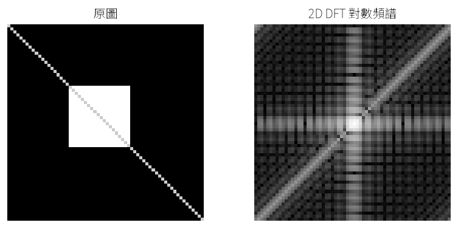
🤖 AI 生圖可用：重繪此示意圖的提示詞（結構化）
WHAT: Two side-by-side grayscale image panels: LEFT is a simple original image containing a solid square plus a diagonal line; RIGHT is its 2D DFT magnitude spectrum in log scale, shown as a bright cross/star pattern radiating from the center. WHY: The reader must see that structured content in the spatial image (edges, a diagonal line, a rectangular block) produces STRUCTURED, non-random patterns in the frequency domain (bright lines/crosses at specific orientations), not random noise. MUST show: (1) recognizable geometric shapes in the left image (not arbitrary blur), (2) a visibly structured (not uniformly random) bright pattern in the right spectrum, ideally echoing the orientation of features in the left image, (3) both panels using the same intensity colormap style for comparability. AVOID: a spectrum panel that just looks like uniform noise or a plain blob with no discernible structure. STYLE: clean scientific image plot, grayscale colormap, white background, axis-off image tiles.
一句話：把 1D DFT 對行、列各做一次，得到 2D 影像的頻譜。
定義：$Y(k,l)=\frac{1}{N}\sum_{m,n}X(m,n)W_N^{km}W_N^{ln}$；逆變換 $X(m,n)=\frac{1}{N}\sum_{k,l}Y(k,l)W_N^{-km}W_N^{-ln}$。
可分離性：$Y=W^H X W$（先對行做、再對列做），把 2D DFT 拆成 $2N$ 個 1D DFT。計算成本 $O(N^2\log_2 N)$——比直接 2D 的 $O(N^4)$ 少 100 倍以上。
影像頻譜的特性：
- 自然影像的能量集中在低頻（DC 附近），左上角亮、右下角暗。
- 邊緣在頻譜中產生對角線方向的高頻條紋。
- 旋轉紋理 → 頻譜也旋轉相同角度。
- 圖 6.9 顯示 DFT 能量比 DST/DCT 分散。
為何重要：2D DFT 是 JPEG（早期版本）的核心、頻域濾波、紋理分析、影像匹配的基礎。
與 1D DFT 相同的限制：固定基底、不考慮資料特性。對能量高度集中的訊號，DCT 通常比 DFT 更好。
2D DFT 用 FFT 計的複雜度？
離散餘弦/正弦變換（DCT/DST）
▼怎麼操作：拖動 $k$ 滑桿（保留係數數），選擇訊號類型；藍線 (DCT) 與紅線 (DFT) 即時對比能量保留率。
觀察什麼：對 Markov 訊號，DCT 幾乎完全超越 DFT（少數係數就保留 95% 能量）；對純正弦波，DFT 一個係數就 100%。
正確基準：DCT 對一階 Markov 過程的 rate-distortion 函數逼近 KL 變換——這是 DCT 成為 JPEG/MPEG 壓縮標準的理論基礎。
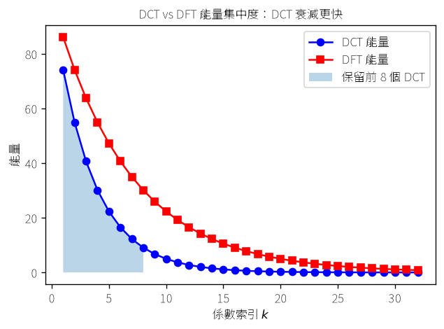
🤖 AI 生圖可用：重繪此示意圖的提示詞（結構化）
WHAT: A line chart comparing two decay curves labeled "DCT energy" and "DFT energy" against coefficient index, with the DCT curve dropping toward zero visibly faster, plus a shaded region marking "top 8 DCT coefficients kept". WHY: The reader must see WHY DCT, not DFT, is the compression workhorse (e.g. in JPEG) -- for typical smooth signals, DCT concentrates energy into far fewer coefficients than DFT, so truncating to a small k loses much less information under DCT. MUST show: (1) two visibly different decay rates (DCT clearly steeper/faster than DFT), (2) a shaded/highlighted region showing how much energy is captured by a small number of DCT coefficients, (3) legend distinguishing the two curves. AVOID: two curves with near-identical decay rates (that would contradict the whole point); no visual indication of "energy captured by first k terms". STYLE: clean scientific line+fill plot, white background, blue DCT curve, red DFT curve, legend.
一句話：用實數 cos/sin 基底代替 DFT 的複指數，能量集中度比 DFT 更好（特別是對一階 Markov 過程）。
DCT：$y(k)=\alpha(k)\sum_n x(n)\cos\frac{\pi(2n+1)k}{2N}$，$\alpha(0)=\sqrt{1/N}$，$\alpha(k\gt 0)=\sqrt{2/N}$。$C$ 矩陣元素是 cos 函數值，$C$ 是正交矩陣（$C^{-1}=C^T$）。
DST：$S(k,n)=\sqrt{\frac{2}{N+1}}\sin\frac{\pi(k+1)(n+1)}{N+1}$，同樣正交。
為何 DCT 重要：
- JPEG、MPEG、MP3 全部用 DCT——影像/視訊/音訊壓縮的事實標準。
- 對自然影像（一階 Markov 模型），DCT 接近 KLT 但計算只要 $O(N\log N)$ FFT-like 演算法。
- 圖 6.9 顯示 DCT 能量比 DFT 更集中（亮區更小）。
與 DFT 比較： | | DFT | DCT | |--|--|--| | 基底 | 複指數 | 實 cos | | 能量集中 | 尚可 | 更好 | | 邊界處理 | 隱含週期 | 偶延拓（隱含） | | 計算 | FFT | 快速 DCT |
為何 DCT 對影像好：影像像素序列常被建模為一階 Markov，DCT 的偶延拓讓邊界更平滑，避免 DFT 的週期不連續造成的頻譜洩漏。
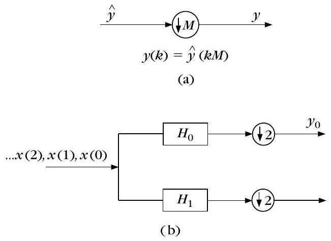
DCT 為何比 DFT 更適合影像壓縮？
Hadamard 變換
▼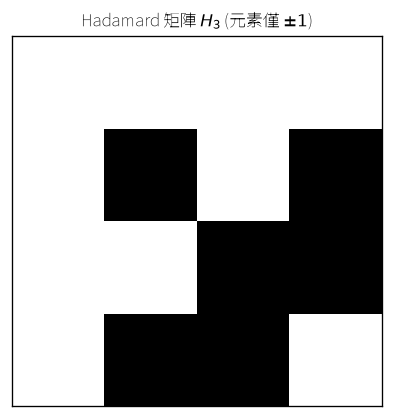
🤖 AI 生圖可用：重繪此示意圖的提示詞（結構化）
WHAT: A small square grid heatmap (8x8) of a Hadamard matrix, cells colored only two colors (e.g. dark/light) representing +1 and -1, with a title noting "elements are only +-1". WHY: The reader must see the Hadamard transform's defining simplicity -- unlike DFT/DCT which need real multiplications by cosine/sine values, every basis entry is exactly +1 or -1, so the transform needs only additions and subtractions (extremely cheap to compute). MUST show: (1) a clean two-color checkerboard-like pattern with visible recursive block structure (self-similar quadrants), (2) a caption or label stating the matrix entries are only +-1, (3) no anti-aliased/gradient shading (must look like a hard binary pattern). AVOID: a smooth gradient colormap that implies continuous values (defeats the point about only two discrete values). STYLE: flat 2-color heatmap, black/white or dark-blue/light-blue, white background, axis-off.
一句話：只用 ±1（加/減法）就能做的正交變換——無需乘法，適合運算資源受限的硬體。
構造：$H_n=H_1\otimes H_{n-1}$（Kronecker 乘積），$H_1=\frac{1}{\sqrt{2}}\begin{pmatrix}1&1\\1&-1\end{pmatrix}$。$N=2^n$ 大小，$N\times N$ 全 $\pm 1/\sqrt{N}$ 元素。
範例 $N=4$：$H_2=\frac{1}{2}\begin{pmatrix}1&1&1&1\\1&-1&1&-1\\1&1&-1&-1\\1&-1&-1&1\end{pmatrix}$。
特性：
- 么正：$H_n^{-1}=H_n^T=H_n$（對稱）。
- 變換只用加減法（零乘法），硬體實作便宜。
- $O(N\log_2 N)$ 快速算法存在。
- 能量打包「好到很好」，紋理辨識實驗中表現接近 KLT。
與其他變換對比：與 DFT/DCT/Haar 同為「固定基底變換」，無需學。Hadamard 計算最簡單，但能量打包比 DCT 略遜。在即時處理、低功耗晶片、DSP 教學中常用。
Hadamard 變換最大的運算優勢？
Haar 變換與多解析度分析的起點
▼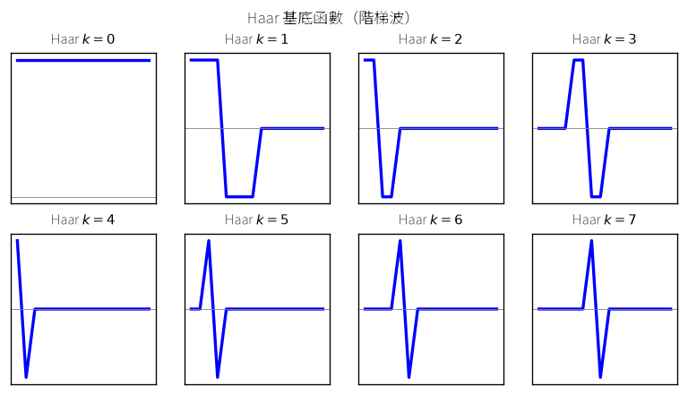
🤖 AI 生圖可用：重繪此示意圖的提示詞（結構化）
WHAT: A grid of 8 small line plots, each showing one Haar basis function as a piecewise-constant step wave (rectangular pulses going up/down/flat), at increasingly fine time-localization scales across the grid. WHY: The reader must see that Haar basis functions are simple STEP waves (not smooth like DCT's cosines), and that different basis indices localize their "activity" to narrower and narrower time windows -- this is the seed of multiresolution/wavelet analysis. MUST show: (1) at least one clearly flat/constant basis (index 0), (2) several step-shaped basis functions with visibly different pulse widths/positions across the grid (not all identical shape), (3) a shared y-axis scale so amplitude differences are meaningful. AVOID: drawing all 8 basis functions as smooth curves (that's DCT's job, not Haar's); making every subplot look identical. STYLE: clean scientific small-multiples line plot, white background, blue step lines, gray zero-reference line.
一句話：Haar 是階梯型正交基底，能分解序列為「平均值」與「差值」，是後續小波變換的雛形。
Haar 函數：$h_0(z)=1/\sqrt{L}$（常數），$h_{pq}(z)=\frac{1}{\sqrt{L}}\begin{cases}2^{p/2}&\frac{q-1}{2^p}\leq z\lt \frac{q-1/2}{2^p}\\-2^{p/2}&\frac{q-1/2}{2^p}\leq z\lt \frac{q}{2^p}\\0&\text{otherwise}\end{cases}$。$h_0$ 是平均，$h_{pq}$ 在 $[0,1]$ 上是分段常數的正負階梯。
變換矩陣：$L\times L$ Haar 矩陣是稀疏的（很多 0），對應著兩點平均與差值的二元分組。
重新解讀（重要）：把 $N$ 個樣本兩兩配對，Haar 變換等價於：
- 低通濾波器 $H_1(z)=\frac{1}{\sqrt{2}}(1+z)$：算相鄰兩點平均 $y_1(k)=\frac{x(2k)+x(2k+1)}{\sqrt{2}}$。
- 高通濾波器 $H_0(z)=\frac{1}{\sqrt{2}}(1-z)$：算相鄰差值 $y_0(k)=\frac{x(2k)-x(2k+1)}{\sqrt{2}}$。
- 下採樣 $M=2$。
遞迴成多解析度：低通輸出再分高低通、再下採樣……形成樹狀濾波器組，得到不同尺度（解析度）的訊號版本——這就是多解析度分析（multiresolution analysis）的開端，圖 6.13 顯示三層樹狀濾波器組。
意義：Haar 雖簡單，但揭示了「將訊號分層分解到不同尺度」的強大概念，這是後續 Daubechies、symlet 等小波的基礎。
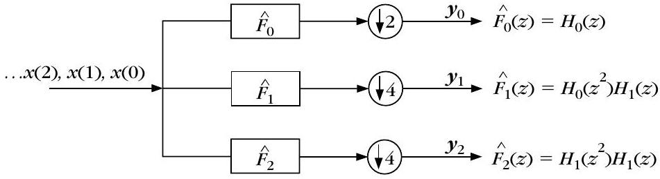
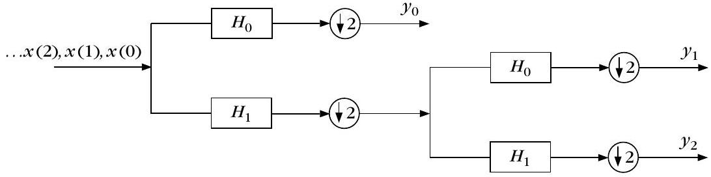
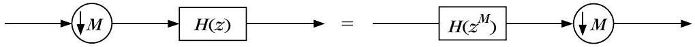
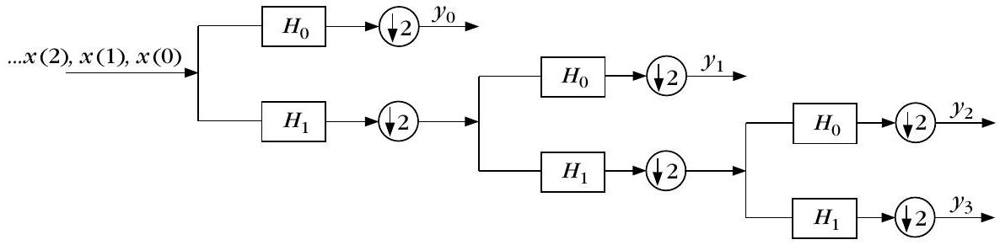
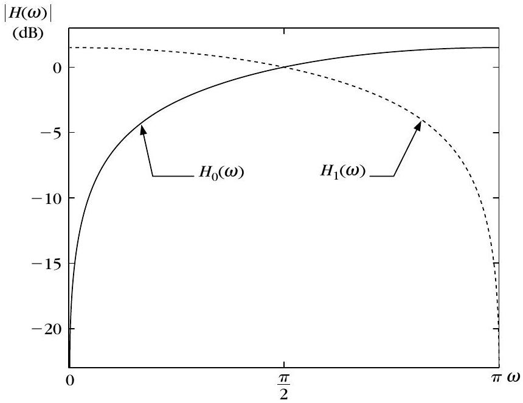
Haar 的高通輸出 $y_0(k)$ 計算？
離散小波變換（DTWT）與濾波器組
▼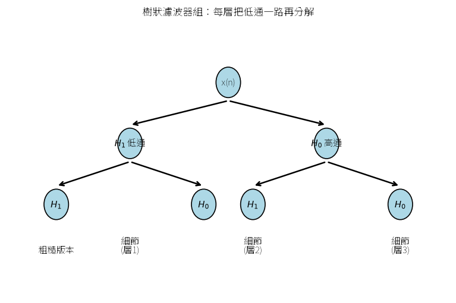
🤖 AI 生圖可用：重繪此示意圖的提示詞（結構化）
WHAT: A 2x4 grid of small grayscale image tiles: the original image plus four "sub-band" tiles labeled LL/LH/HL/HH from one level of 2D wavelet decomposition, where LL looks like a blurred smaller copy of the original and LH/HL/HH look like edge-detail maps highlighting horizontal/vertical/diagonal structure respectively. WHY: The reader must see that one wavelet decomposition step splits an image into ONE coarse "approximation" (LL) plus THREE "detail" bands capturing different edge orientations -- this is literally how multiresolution filter-bank analysis works, one level at a time. MUST show: (1) the LL tile visibly looking like a blurred/smaller version of the original, (2) the LH/HL/HH tiles visibly emphasizing DIFFERENT edge orientations from each other (not identical), (3) clear labels naming all four bands. AVOID: all four sub-band tiles looking identical or like random noise with no directional structure. STYLE: clean scientific image-grid plot, grayscale colormap, white background, axis-off tiles, small text labels.
一句話：用完美重建濾波器組做時頻分解，是 STFT 之後訊號處理的標準工具。
Two-Band 濾波器組：分析端 $H_0(z), H_1(z)$（高通、低通）+ 下採樣 M=2；合成端 $G_0(z), G_1(z)$ + 上採樣 M=2 + 加總。完美重建條件 $\hat{x}(n)=x(n)$ 當 $\sum_n h_i(2k-n)g_j(n-2l)=\delta_{kl}\delta_{ij}$（雙正交性）。
DTWT 對：$y_i(k)=\sum_n x(n)h_i(2k-n)$，$x(n)=\sum_i\sum_k y_i(k)g_i(n-2k)$。這是雙正交展開，基底 $\phi_{ik},\psi_{jk}$ 滿足 $\langle\phi_{ik},\psi_{jl}\rangle=\delta_{ij}\delta_{kl}$。
正交 vs 雙正交：當 $\phi_{ik}$ 自身正交（$\sum_n h_j^i(2k-n)h_j(2l-n)=\delta_{kl}\delta_{ij}$），合成濾波器就是分析濾波器的時間反轉 $g_i(n)=h_i(-n)$，稱為正交/paraunitary 濾波器組。
Daubechies 小波：第一組正交緊支撐（compact support）的濾波器，長度 4、6、8、10……的低通係數如表 6.2。它讓我們用更平滑的濾波器（不再是 Haar 的硬階梯）實現完美的時頻局部化。
多頻帶：J-層樹狀濾波器組（圖 6.17-6.19）給出 $J$ 個頻帶，每層輸出解析度減半、頻率局部性加倍。
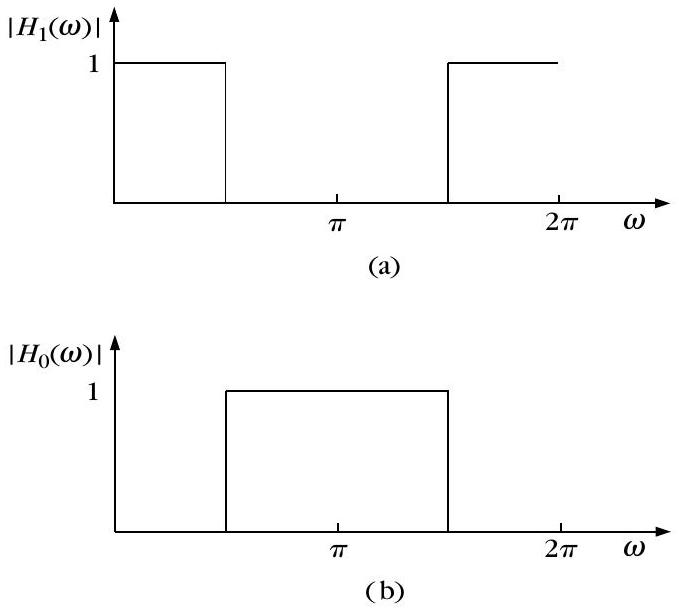
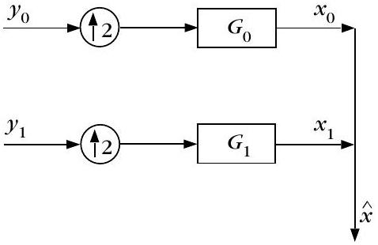
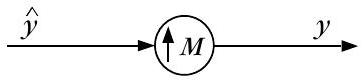
完美重建濾波器組的核心條件？
小波包、多解析度與二維推廣
▼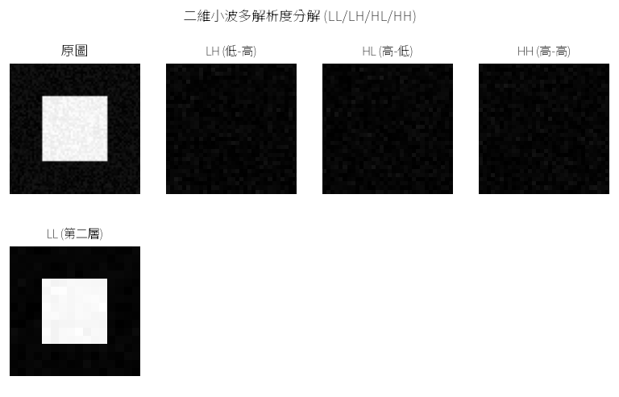
🤖 AI 生圖可用：重繪此示意圖的提示詞（結構化）
WHAT: A binary decision-tree diagram: a root node "x(n)" splits into a low-pass branch H1 and a high-pass branch H0; the low-pass branch splits AGAIN into another low/high pair, while the high-pass branches are left as leaves labeled "detail level 1/2/3"; the final low-pass leaf is labeled "coarse approximation". WHY: The reader must see the recursive structure of a filter-bank tree -- only the LOW-PASS output keeps getting split again and again (that's what makes it a wavelet/multiresolution tree rather than a flat filter bank), producing detail bands at progressively coarser time/frequency resolutions. MUST show: (1) a visibly asymmetric tree where only the low-pass branch recurses (high-pass branches terminate immediately as leaves), (2) at least 3 levels of recursion, (3) labels distinguishing "detail" leaves at different levels from the final "coarse" leaf. AVOID: drawing a symmetric tree where both branches keep splitting equally (that would misrepresent the wavelet decomposition and look like a generic binary tree). STYLE: flat node-and-arrow diagram, white background, light-blue circular nodes, black arrows, small text labels.
多解析度詮釋：低通濾波器給「粗糙（coarse）」版本（低頻、全域），高通給「細節（detail）」版本（高頻、局部）。反覆對低通做分解，得到多層解析度（圖 6.13 樹狀）。這種「金字塔式」分解在影像壓縮（JPEG2000 用 5/3 小波）、邊緣偵測、紋理分析無所不在。
多頻帶（樹狀 DTWT）：$J$ 層濾波器組給出 $J$ 個頻帶，第 $i$ 頻帶有 $2^{i+1}$ 個移位（解析度低但頻率窄）。低通一路 $\hat{x}$ 仍可重建所有 $\hat{x}_i$。
小波包（Wavelet Packets）：把所有節點（不只低通一路）都繼續分解，產生更細的頻率分割。適合作訊號分類（每個 packet 對應不同頻帶，可選最有判別力的子集）。
二維推廣：用可分離方式，先對行做 1D 小波、再對列做 1D 小波，得到 LL、LH、HL、HH 四個子帶（圖 6.20）。重複對 LL 分解，形成多解析度影像金字塔。JPEG2000、影像去噪、特徵提取都靠這個。
應用場景：
- 手寫字元辨識（Example 6.9）：小波特徵對不同字體變化有局部化、穩健的描述。
- 紋理分類：不同紋理在不同子帶（小尺度邊緣、大尺度週期）能量分布不同。
比較其他變換：KLT/SVD 計算慢但最優；DFT/DCT 計算快但基底固定、無局部化；小波兼具計算效率（$O(N)$）與時頻局部化，是「非平穩訊號」首選。
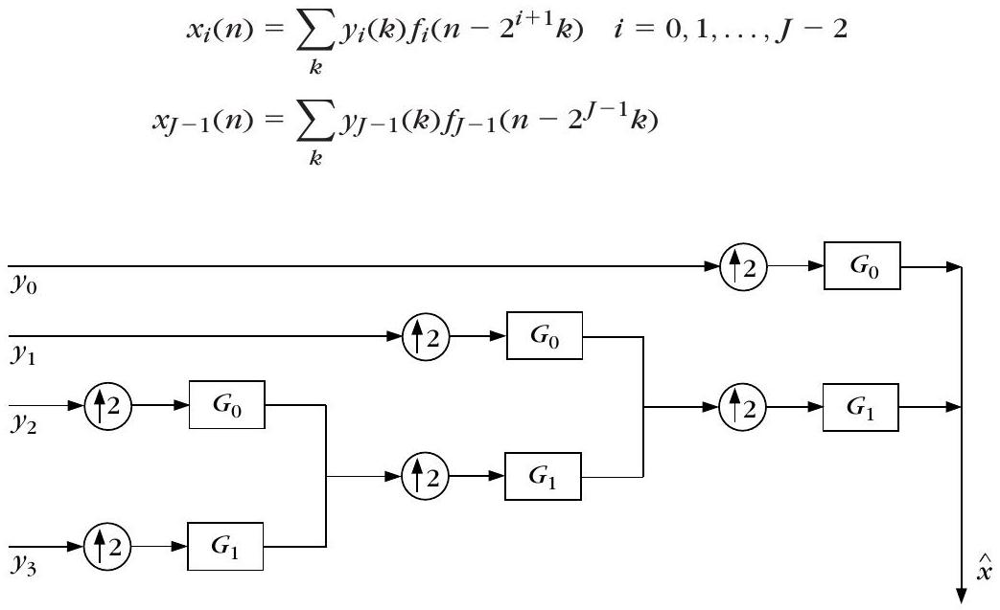
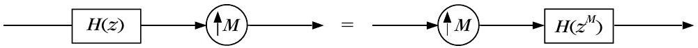
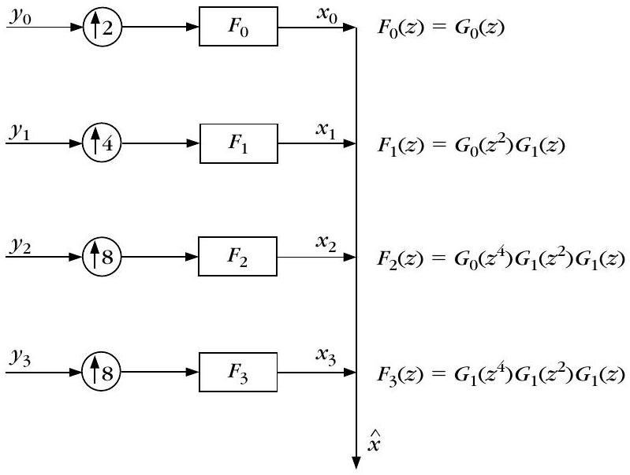
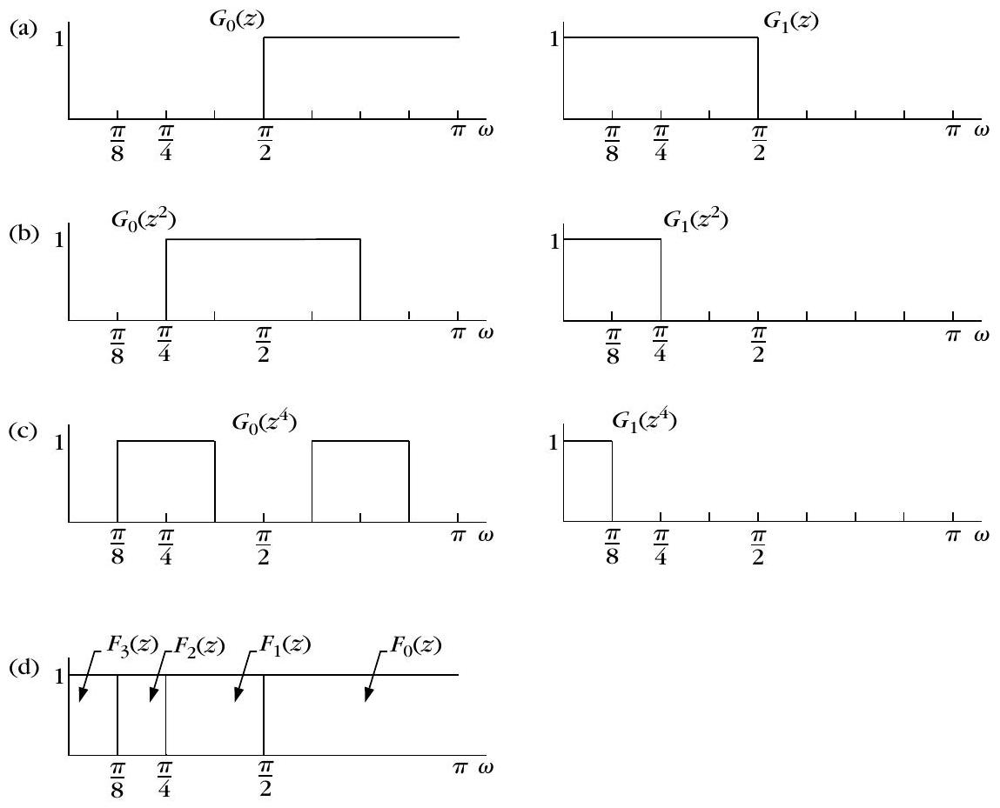
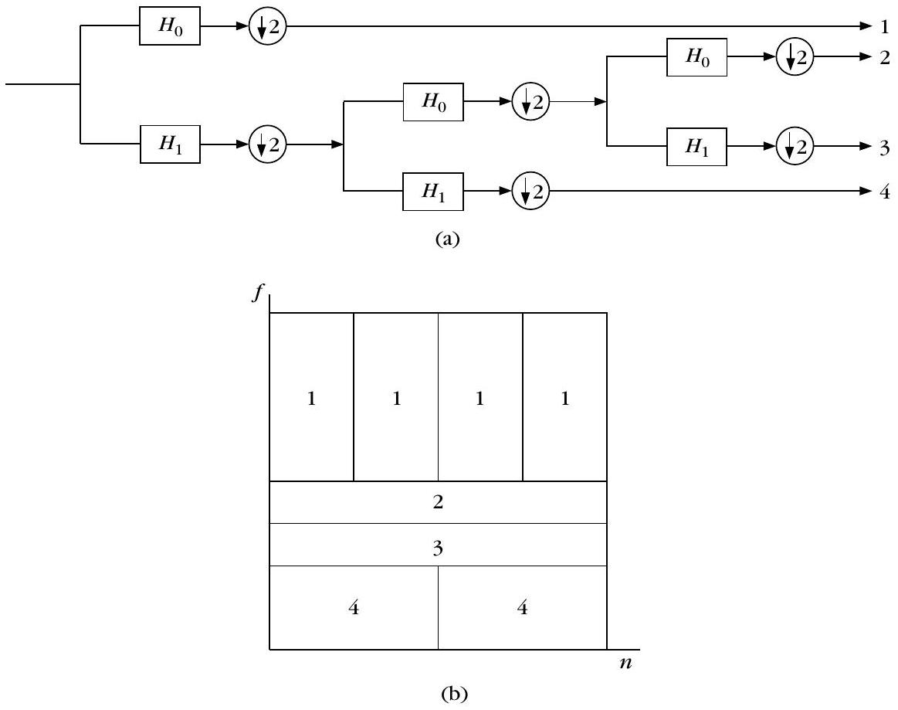
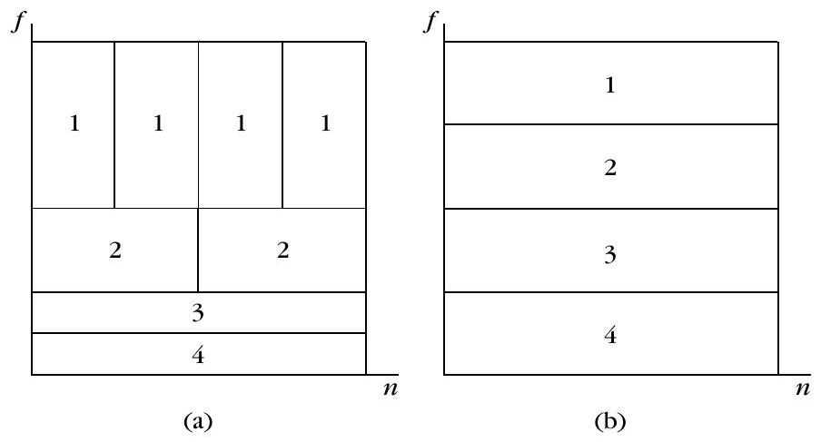
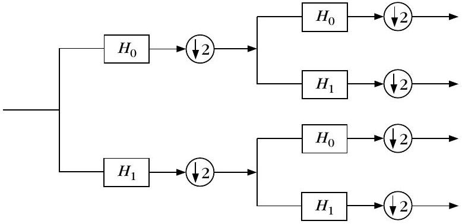
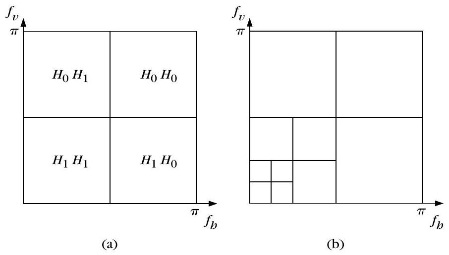
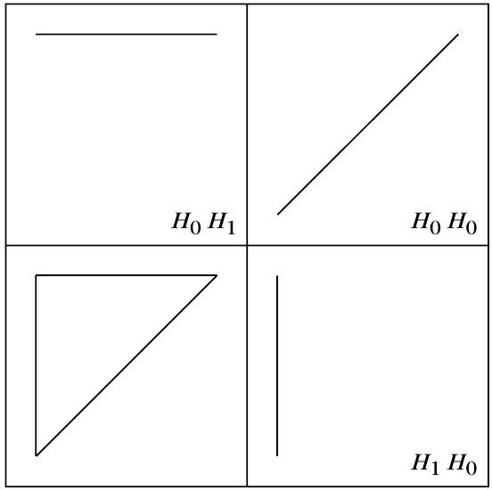
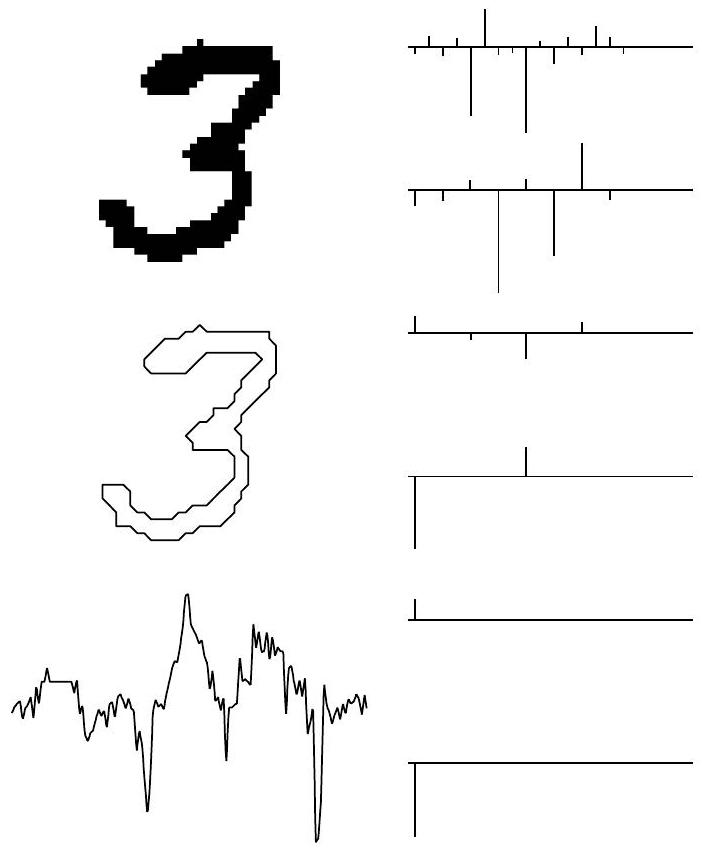
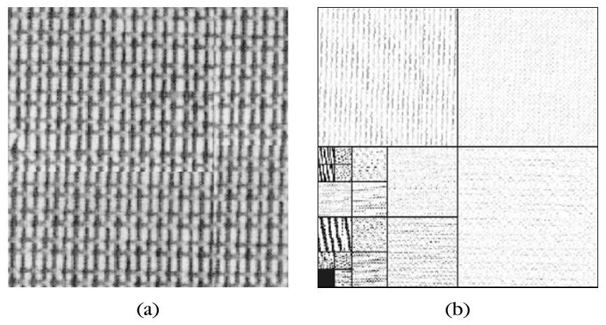
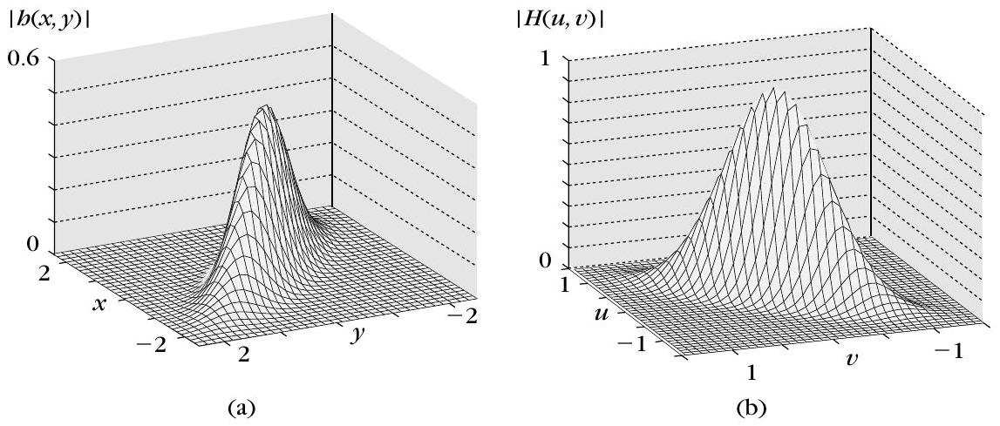
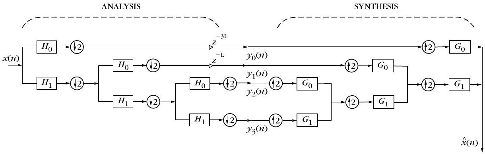
二維小波變換的可分離分解順序？